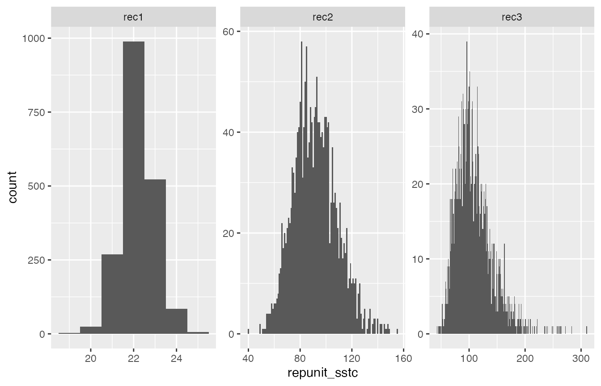

Summarizing Uncertainty on Stock-Specific Total Catch
Eric C. Anderson
2025-10-16
Source:vignettes/uncertainty-on-total-catch.Rmd
uncertainty-on-total-catch.RmdThe R package ‘rubias,’ like most other mixed-stock analysis programs, implements a typical finite mixture model. In such a model, a key parameter is the proportion of different components present in the population from which the samples are being taken. We call this parameter which includes a proportion for each of the components in the mixture. In the mixed-stock fisheries context, holds the stock-specific proportions that are present in the ocean at the time and location of sampling. This assemblage of fish is treated in the model (because of the assumption of multinomial sampling) as an infinite pool from which samples are drawn.
While is clearly a necessary variable in a mixture model—it is essential to model the population proportions—it might not always be the ultimate target of interest. A germane example of this occurs when directly managing fisheries using genetic stock identification (GSI). In these cases, managers may be particularly interested in the numbers of fish from different populations or reporting units that occur in the total catch from a particular fishery (or across multiple fisheries).
Because fisheries might be managed to limit impacts on a particular weak stock to below a certain threshold, it is important to be able to evaluate the uncertainty in these estimates of stock-specific total catch. This vignette describes how to do that with the new functionality available in the updated version of ‘rubias’. Before describing the details, however, we explain why propagating the uncertainty found in the Monte Carlo sample of does not accurately reflect uncertainty in stock-specific total catch, and we describe the newly implemented approach in ‘rubias’ for evaluating uncertainty in stock-specific total catch in a rigorous way.
Uncertainty in is not uncertainty in stock-specific total catch
Although the uncertainty in can affect the amount of uncertainty in stock-specific total catch, the two cannot be directly equated because uncertainty in always reflects the variability due to having drawn a random sample. By contrast, the sample itself might be a fixed part of the total catch. The implications of this are easiest to understand when the entire catch has been sampled for GSI. For, example, imagine that the total catch was 300 fish, all 300 of those fish are subject to GSI, and the population of origin of fish from stock can be identified with no uncertainty using genetics. If 20 fish originated from stock , then the total catch from stock is 20, with no error. However, the 90% credible interval on the proportion of fish from stock in the ocean would be, from the binomial distribution, (0.043, 0.09). If this variation were applied to the total catch of 300, it would erroneously suggest that between 13 and 27 fish from stock were in the catch, when it is clear that exactly 20 fish from were in the catch!
The above example is simple and contrived but it illustrates that the uncertainty around cannot be directly used to quantify the uncertainty in stock-specific total catch. Unlike our simple example, stock-specific total catch will typically be affected by other sources of variation such as uncertainty in genetic assignment, subsampling of the total catch for genetic analysis, and simple uncertainty in the estimates of the actual total catch. Fortunately, all of these sources of uncertainty can now be accounted for in a rigorous way within the Markov Chain Monte Carlo (MCMC) sampling framework of ‘rubias,’ providing users with an MCMC sample of the stock-specific total catch for each stock. This MCMC sample can then be summarized however desired, or it can be fed into further analyses. The next section describes the statistical background on how ‘rubias’ provides an MCMC sample of the stock-specific total catch.
MCMC for stock-specific total catch
Acyclic directed graph showing the standard conditional GSI model. Diamond nodes are deterministic values used for priors. Circular nodes are variables. The shaded, circular nodes denote variables that are observed and the unshaded circular nodes are variables whose values are updated and sampled during the MCMC process. The large rectangles are plates that represent replication over individuals and/or loci.
The above figure shows the acyclic directed graph (DAG) used in the conditional GSI model implemented in ‘rubias.’ The stock proportion vector in the ocean, , is visible immediately below , which is a parameter vector for the prior on . There are fish in the reference baseline data set. is the known origin of fish in the baseline, while is its observed genotype. is an indicator vector giving the unknown origin of the fish from the mixture, and is the genotype data from that fish, . are the unknown population allele freqeunces at locus , and are the priors on those frequencies. MCMC sampling in this model proceeds using Gibbs sampling, with , , and being updated during each sweep of the algorithm by drawing each new value from its full conditional distribution. (A “sweep” in this context is a cycle of the MCMC algorithm during which values have been updated for all the variables in the model.)
Acyclic directed graph showing the augmented standard conditional GSI model to include additional fish in the catch that were not included in the GSI analysis.
In order to sample from a posterior distribution for the stock-specific total catch, we introduce the indicator vectors , , giving the unknown origin of each of the fish in the total catch that remain after the fish used in the GSI analysis are removed from the total catch. The DAG for that model appears in the above figure. Sampling in this new model proceeds exactly as before, except that in every sweep we also simulate values for the different vectors from their full conditional distribution, which is simply a multinomial sample of size 1 from cell probabilities that are the current values of : At the conclusion of each sweep a sample from the posterior distribution of the stock-specific total catch is obtained by summing over all the and vectors, In fact, to make things even easier, by definition is simply a multinomial random variable of R trials with cell probabilities of .
Additional Complications
Sometimes, the size of the total catch, , might itself be estimated with some uncertainty. Although catch estimates are often presented without uncertainty, validated catch estimates may be rare. Frequently, catches of individuals are estimated by converting landed biomass into individual pieces by estimating average weight for countable subsamples of the catch (e.g. commercial offloads at fish processing facilities), and substantial uncertainty in catch numbers may result due to heterogeneity in average size by date, location, or fishing gear, or even due to error in handled samples [e.g., species identification for estimating average weights; see Faunce et al. (2015)]. Another method commonly used to estimate numerical catch is to multiply total fishing effort by sampled estimates of catch per unit of effort (CPUE, e.g. creel surveys in recreational fisheries). Because fishers can vary strongly based on their behavior (spatiotemporal distribution, skill, and willingness to be surveyed), these estimates based on CPUE can be highly uncertain (Cabanellas-Reboredo et al. 2017).
In order to handle uncertainty in the true total catch, in ‘rubias’ the assumption is made that the true size of the total catch is conditionally independent of the stock composition given the estimated total catch. With that assumption, the uncertainty in (the total catch) can be propagated into the stock-specific total catch by supplying a sample of from its posterior distribution. Different values from that posterior sample can be used for in each sweep that ‘rubias’ performs. Examples for doing so are provided below. It is worth noting that there may be times when the stock composition is not conditionally independent of the true catch given the estimated total catch, and users should verify whether or not this assumption holds. For example, one may imagine a case in which transgenerational genetic mark-recapture (Rosenbaum et al. 2024) would be used to inform run reconstructions and the associated catch estimates for some subset of stocks, and GSI could be used to parse the total catch estimates into all stocks, resulting in genotypes possibly contributing to both total catch estimates and estimates of stock composition.
Often, the mixed fishery includes commercial or recreational landings, which are certainly part of the lethal catch or take. However, in some mixed stock fisheries, some of the fish sampled and genotyped might be from a test fishery which is not necessarily lethal, as fish might be returned alive to the water after being sampled for genetic analysis. In these cases, fish from the test fishery might not be considered part of the total catch, and therefore, they should not contribute to the estimated impacts on any particular stock that they are assigned to. In other cases, managers might have an independent estimate of post-sampling mortality that is not 0. This can be accommodated, as shown in the examples in the “Some Genotypes Sampled Might not be Considered Part of the Catch/Mortality” section below.
Examples
In this section we walk through some simple, hands-on examples. We
will be using some of the example data that comes with the rubias
package. Namely, we are using the chinook reference data
set that comprises 91 SNP markers typed on 7,301 fish from 69
collections belonging to 39 different reporting units.
The samples from the mixed stock fisheries we will analyze are in the
data object chinook_mix. This data set contains genotypes
from 2,256 fish grouped into three different fisheries (“rec1”, “rec2”,
and “rec3”). (These were not really different fisheries, but for our
purposes, here, we are going to pretend that they are different
fisheries featuring different levels of management information.) For the
most part, the mix of fish found in these fisheries are typical of those
seen off the coast of central and northern California. Most of the fish
are from the Central Valley fall-run stock and, for our purposes here,
we will assume that we are particularly interested in impacts on one of
the less numerous reporting units in these mixtures: “CaliforniaCoast”,
which comprises fish from the Eel and Russian rivers,listed as
Threatened under the U.S. Endanged Species Act.
For the purposes of illustration, we will imagine that “rec1” is a recreational fishery in which every single landed fish is sampled, “rec2” is a fishery in which an exact 25% of the total catch is sampled and genotyped, and “rec3” is a fishery from which the managers try to sample 25% of the fish; however the true fraction sampled varies quite a bit. Let’s imagine that the managers of “rec3” have a Bayesian method to estimate the true fraction sampled, and that the posterior for that fraction is a beta distribution with parameters 2 and 6, such that a sample of that posterior can be obtained like this
library(dplyr)
library(tidyr)
library(ggplot2)
library(rubias)
rubi_method <- "MCMC" # set this to BR if you want to run everything using
# the "Bayesian Resampling" approach in which the allele
# frequencies are updated according to the allocations
# of the fish in the mixture.
set.seed(3)
rec3_tot_catch_sample <- rbeta(5000, 16, 48)And that posterior sample is distributed as shown in the following figure.
Histogram of the estimated sampling fraction for the rec3 fishery
In other words, there is a lot of uncertainty about what the sampling fraction is, which means there is a lot of uncertainty in the estimate of total catch from that “rec3” fishery.
Using Variability in
We will start off with a simple look at how things can go wrong if you use the variability in to try to estimate the variability on total catch. We will focus on the “rec1” fishery here, in which we are assuming that every single fish in the catch has been sampled and genotyped.
First, we analyze just that fishery and summarise by reporting units.
rec1_ests <- chinook_mix %>%
filter(collection == "rec1") %>%
infer_mixture(chinook, ., gen_start_col = 5)## Collating data; compiling reference allele frequencies, etc. time: 1.01 seconds
## Computing reference locus specific means and variances for computing mixture z-scores time: 0.10 seconds
## Working on mixture collection: rec1 with 743 individuals
## calculating log-likelihoods of the mixture individuals. time: 0.06 seconds
## performing 2000 total sweeps, 100 of which are burn-in and will not be used in computing averages in method "MCMC" time: 0.52 seconds
## tidying output into a tibble. time: 0.03 seconds
# get the mixing proportions trace by repunit
rec1_pi_trace_repu <- rec1_ests$mix_prop_traces %>%
filter(sweep > 100) %>%
group_by(sweep, repunit) %>%
summarise(repunit_pi = sum(pi))## `summarise()` has grouped output by 'sweep'. You can override using the
## `.groups` argument.
# get the maximum-a-posteriori assignment to repunit
rec1_MAP_repu <- rec1_ests$indiv_posteriors %>%
group_by(indiv, repunit) %>%
summarise(repunit_PofZ = sum(PofZ)) %>%
group_by(indiv) %>%
filter(repunit_PofZ == max(repunit_PofZ))## `summarise()` has grouped output by 'indiv'. You can override using the
## `.groups` argument.Histogram of posterior probabilites of membership in the CaliforniaCoast reporting unit for 22 fish assigned there.
It appears that 15 fish are almost certainly from CaliforniaCoast, with another 5 being very likely from there, and then two of them somewhat likely from there. In other words, we are pretty confident that 20 to 22 fish from the CaliforniaCoast are included in the total catch.
Let us see what happens if we naively use the estimated proportion of fish from CaliforniaCoast to try to estimate the number of such fish in the total catch. The figure below is a histogram of the posterior sample of the fraction of fish from CaliforniaCoast in the ocean from which the catch was taken:Histogram of a sample from the posterior distribution of the fraction of fish from the CaliforniaCoast reporting unit in the ocean.
Posterior distribution of total catch from CaliforniaCoast if calculated naïvely by simply multiplying the corresponding mixing proportion sample by the total number of fish caught.
This is absurd! On the basis of individual assignments, we are pretty sure that between 20 and 22 CaliforniaCoast fish were caught, certainly not 14 or 30! This is why it is important to use the new functionality in ‘rubias’ to estimate total stock-specific catch. We illustrate that in the next two sections.
All Fishery Samples are Part of the Catch
We start off with what will likely be the most standard case: the samples have come from the fishery and all the samples are considered to be part of the impact of the fishery. In other words, every fish in the sample of genotypes is considered to be part of the total catch. (The next section discusses how to handle departures from this standard case).
To estimate the total stock specific catch we must provide ‘rubias’
with information about the size of the total catch. We provide this
information in a tibble with one column collection which
gives the mixture collection (“rec1”, “rec2”, and “rec3” in the current
case), and another column, tot_catch, which must be a
list-column, that gives the information about the total catch. This
second column has to be a list column because we want it to be able to
hold a sample from the posterior distribution for total, aggregate
catch.
In order to make this tibble, we will need to know the sample sizes from our three fisheries. They are:
## # A tibble: 3 × 2
## collection n
## <chr> <int>
## 1 rec1 743
## 2 rec2 772
## 3 rec3 741So, given what we described earlier about how the sample size relates
to the total catch (and, specifically recalling that
rec3_tot_catch_sample is a sample from the posterior
distribution of sampled catch fractions), we form the necessary tibble
like this:
total_catches <- tibble(
collection = c("rec1", "rec2", "rec3"),
tot_catch = list(
743,
772 / 0.25,
743 / rec3_tot_catch_sample
)
)It looks like this:
total_catches## # A tibble: 3 × 2
## collection tot_catch
## <chr> <list>
## 1 rec1 <dbl [1]>
## 2 rec2 <dbl [1]>
## 3 rec3 <dbl [5,000]>Then, to get these standard-case total catch estimates from ‘rubias’
we just need to pass this tibble into infer_mixture() as
the total_catch_tib parameter.
mix_ests_with_catch <- infer_mixture(
reference = chinook,
mixture = chinook_mix,
gen_start_col = 5,
total_catch_tib = total_catches,
method = rubi_method
)## Collating data; compiling reference allele frequencies, etc. time: 0.80 seconds
## Computing reference locus specific means and variances for computing mixture z-scores time: 0.10 seconds
## Working on mixture collection: rec2 with 772 individuals
## tot_catch_vec: 3088 3088 3088 3088 3088 3088 3088 3088 3088 3088 3088 3088...
## calculating log-likelihoods of the mixture individuals. time: 0.06 seconds
## performing 2000 total sweeps, 100 of which are burn-in and will not be used in computing averages in method "MCMC" time: 0.58 seconds
## tidying output into a tibble. time: 0.06 seconds
## Working on mixture collection: rec1 with 743 individuals
## tot_catch_vec: 743 743 743 743 743 743 743 743 743 743 743 743...
## calculating log-likelihoods of the mixture individuals. time: 0.06 seconds
## performing 2000 total sweeps, 100 of which are burn-in and will not be used in computing averages in method "MCMC" time: 0.55 seconds
## tidying output into a tibble. time: 0.06 seconds
## Working on mixture collection: rec3 with 741 individuals
## tot_catch_vec: 3839 3198 2791 4069 2834 2951 2911 2258 4157 2172 3606 4042...
## calculating log-likelihoods of the mixture individuals. time: 0.06 seconds
## performing 2000 total sweeps, 100 of which are burn-in and will not be used in computing averages in method "MCMC" time: 0.57 seconds
## tidying output into a tibble. time: 0.06 secondsAfter that has run, the tibble in
mix_ests_with_catch$stock_specific_total_catch_traces holds
the posterior sample of the total catch. It is structured much like the
mixing proportions trace output. The first few lines look like:
mix_ests_with_catch$stock_specific_total_catch_traces## # A tibble: 414,000 × 5
## mixture_collection sweep repunit collection SSTC
## <chr> <int> <chr> <chr> <int>
## 1 rec2 0 CentralValleyfa Feather_H_sp 256
## 2 rec2 0 CentralValleysp Butte_Cr_Sp 12
## 3 rec2 0 CentralValleysp Mill_Cr_sp 71
## 4 rec2 0 CentralValleysp Deer_Cr_sp 70
## 5 rec2 0 CentralValleysp UpperSacramento_R_sp 83
## 6 rec2 0 CentralValleyfa Feather_H_fa 323
## 7 rec2 0 CentralValleyfa Butte_Cr_fa 399
## 8 rec2 0 CentralValleyfa Mill_Cr_fa 250
## 9 rec2 0 CentralValleyfa Deer_Cr_fa 316
## 10 rec2 0 CentralValleyfa Mokelumne_R_fa 322
## # ℹ 413,990 more rowsThe column SSTC holds the stock-specific total
catch.
Thus, if we want to see what the posterior distribution for the total catch from the CaliforniaCoast repunit looks like in each of the three fisheries (“rec1”, “rec2”, and “rec3”) we just have to:
- Summarize by reporting unit
- Filter down to just CaliforniaCoast
- Discard the burn-in (which we take to be the default 100 sweeps, here)
- Plot it
Those steps look like this:
CC_sstc <- mix_ests_with_catch$stock_specific_total_catch_traces %>%
group_by(mixture_collection, sweep, repunit) %>%
summarise(repunit_sstc = sum(SSTC)) %>%
filter(sweep > 100, repunit == "CaliforniaCoast")## `summarise()` has grouped output by 'mixture_collection', 'sweep'. You can
## override using the `.groups` argument.
ggplot(CC_sstc, aes(x = repunit_sstc)) +
geom_histogram(binwidth = 1) +
facet_wrap(~mixture_collection, scales = "free")
That is just how we expect things to look:
- If we have genotyped the entire catch (as in the “rec1” fishery) then there is very little variation around the stock specific total catch, especially for a repunit like CaliforniaCoast that is easily distinguished from the others.
- If we have only genotyped 25% of the catch, there is considerably more variation in the posterior for stock-specific total catch. This makes sense—in this case we are extrapolating the repunit from the mixture proportion () estimates to some fish. There will of course be a lot more uncertainty in the stock of origin for fish that were not sampled.
- In the “rec3” fishery, the variability is even greater because there is uncertainty in the actual fraction of the fishery that was sampled.
It can also be instructive to visualize the total stock-specific
catch when it is decomposed into its components: 1) the fish that are
actually in the genetic sample, and 2) the additional fish (if any) that
are part of the catch but not the genetic sample. This is fairly
easy—the return object has not just
stock_specific_total_catch_traces, but also:
-
allocation_count_traces: the counts of fish in the mixture sample that are allocated to the catch each iteration. -
posterior_predictive_remaining_catch_traces: the counts of fish sampled from the posterior predictive distribution to account for the total catch (caught fish not in the sample).
We can pick those out and plot them with the total catch to confirm things are working the way that they should.
CC_pprc <- mix_ests_with_catch$posterior_predictive_remaining_catch_traces %>%
group_by(mixture_collection, sweep, repunit) %>%
summarise(repunit_pprc = sum(PPRC)) %>% # column PPRC has the posterior_predictive_remaining_catch
filter(sweep > 100, repunit == "CaliforniaCoast")## `summarise()` has grouped output by 'mixture_collection', 'sweep'. You can
## override using the `.groups` argument.
CC_ac <- mix_ests_with_catch$allocation_count_traces %>%
group_by(mixture_collection, sweep, repunit) %>%
summarise(repunit_ac = sum(CA)) %>% # column CA has the allocation_count
filter(sweep > 100, repunit == "CaliforniaCoast")## `summarise()` has grouped output by 'mixture_collection', 'sweep'. You can
## override using the `.groups` argument.
# then join those to the total stock-specific catch and pivot them
three_counts <- CC_sstc %>%
left_join(CC_pprc, by = join_by(mixture_collection, sweep, repunit)) %>%
left_join(CC_ac, by = join_by(mixture_collection, sweep, repunit)) %>%
pivot_longer(cols = repunit_sstc:repunit_ac, names_to = "count_type", values_to = "n")We can plot those all together like this:
ggplot(three_counts, aes(x = n, fill = count_type)) +
geom_histogram(binwidth = 1) +
facet_grid(count_type ~ mixture_collection, scales = "free") +
xlab("Number of individuals of repunit CaliforniaCoast")It is worth taking the time to confirm for yourself that these results are exactly as expected, given how the scenarios were designed.
Some Genotypes Sampled Might not be Considered Part of the Catch/Mortality
Another possible use case could involve a test or catch-and-release fishery that is concomitant with a retention fishery. Genotypes from these different fisheries might all end up together as a sample from the mixed fishery at a certain time and place. If it occurs that fish are released after sampling and if they survive the sampling process with no adverse impacts, one would not want to count them as part of the fishing mortality It is, however, conceivable that there is some mortality associated with live release, and in that case it might be appropriate to account for these mortalities as part of the catch. A fixed rate of mortality may be assumed and applied to all releases depending on fishery or environmental conditions. Alternatively, when tissues are taken from a test fishery, a score may be assigned to each fish rating the injuries they received—and hence the chance that they might die after release.
Rubias has a simple way of handling all these cases. Essentially,
each fish in the mixture is assigned a value between 0 and 1, inclusive,
in an additional column (which must appear before the start of the
genotype columns) called prob_is_catch. That is short for
“the probability this fish is considered to be part of the catch.” A
value of 1 means that the fish is part of the catch. A value of 0 means
that the fish is certainly not to be considered as part of the
catch. And a value of
that is between 0 and 1 means that the fish had a probability
of dying after sampling, and if it did die, then it should be considered
part of the catch.
In the previous section, All Fishery Samples are Part of the
Catch, we saw the simple case where each fish in the mixture
has prob_is_catch = 1. That is the default situation:
unless otherwise specified, every fish in a mixture is considered to be
part of the catch. However, if you supply the option
variable_prob_is_catch = TRUE to the
infer_mixture() function, then that function will require
that there is a prob_is_catch column, and it will use the
values within it to account for fish from test samples that might not be
considered part of the catch.
We will make up some data here to illustrate different scenarios. We will imagine that:
- Of the 743 “rec1” fishery samples, the first 300 of them were from a test fishery that is believed to have zero mortality and should not be considered part of the catch.
- All the 772 “rec2” fishery samples were taken in a test fishery where it is well known that fish are handled roughly. On average, 1/5 of those released have a 50% chance of dying as a result of that treatment, and 1/5 of the individuals have a 40, 30, 20, and 10% chance of dying and being part of the catch, respectively, as well (this is obviously just for illustration!)
- All the “rec3” fish are considered to be part of the catch.
We can modify the chinook_mix data set to have a
prob_is_catch column that reflects this:
chinook_mix_with_probs <- chinook_mix %>%
group_by(collection) %>%
mutate(
prob_is_catch = case_when(
collection == "rec1" & (1:n()) <= 300 ~ 0,
collection == "rec1" & (1:n()) > 300 ~ 1,
collection == "rec2" ~ sample(c(0.5, 0.4, 0.3, 0.2, 0.1), n(), replace = TRUE),
collection == "rec3" ~ 1
),
.after = indiv
) %>%
ungroup()Let’s just verify that this was done correctly by counting up the
occurrences of different prob_is_catch values:
## # A tibble: 8 × 3
## collection prob_is_catch n
## <chr> <dbl> <int>
## 1 rec1 0 300
## 2 rec1 1 443
## 3 rec2 0.1 158
## 4 rec2 0.2 149
## 5 rec2 0.3 148
## 6 rec2 0.4 160
## 7 rec2 0.5 157
## 8 rec3 1 741That looks pretty good!
Before we pass that off to infer_mixture() we need to address a
constraint associated with variable_prob_is_catch = TRUE:
the reference data set and the mixture data set must all have the same
columns. So we need to add the same column to the reference data set
chinook. We will simply put a column of 0’s in there.
Now, the genotype data start in the 6th column. If we run this
without the variable_prob_is_catch = TRUE option, then we
will get just what we got before, because infer_mixture()
will not use the prob_is_catch column. However, when we do
include the variable_prob_is_catch = TRUE option, then the
infer_mixture() function is going to look for and use the
information in the prob_is_catch column.
catch_ests_with_var <- infer_mixture(
reference = new_reference,
mixture = chinook_mix_with_probs,
gen_start_col = 6,
method = rubi_method,
total_catch_tib = total_catches,
variable_prob_is_catch = TRUE
)## Collating data; compiling reference allele frequencies, etc. time: 0.71 seconds
## Computing reference locus specific means and variances for computing mixture z-scores time: 0.10 seconds
## Working on mixture collection: rec2 with 772 individuals
## tot_catch_vec: 3088 3088 3088 3088 3088 3088 3088 3088 3088 3088 3088 3088...
## calculating log-likelihoods of the mixture individuals. time: 0.06 seconds
## performing 2000 total sweeps, 100 of which are burn-in and will not be used in computing averages in method "MCMC" time: 0.67 seconds
## tidying output into a tibble. time: 0.05 seconds
## Working on mixture collection: rec1 with 743 individuals
## tot_catch_vec: 743 743 743 743 743 743 743 743 743 743 743 743...
## calculating log-likelihoods of the mixture individuals. time: 0.06 seconds
## performing 2000 total sweeps, 100 of which are burn-in and will not be used in computing averages in method "MCMC" time: 0.64 seconds
## tidying output into a tibble. time: 0.05 seconds
## Working on mixture collection: rec3 with 741 individuals
## tot_catch_vec: 3839 3198 2791 4069 2834 2951 2911 2258 4157 2172 3606 4042...
## calculating log-likelihoods of the mixture individuals. time: 0.06 seconds
## performing 2000 total sweeps, 100 of which are burn-in and will not be used in computing averages in method "MCMC" time: 0.64 seconds
## tidying output into a tibble. time: 0.05 secondsLet us now look at the resulting numbers, paying careful attention to “rec1”, which is particularly illuminating. Because the total catch is the same as before (743), but 300 of the mixture sample are not part of the catch, then there is more variation in the total catch than before.
CC_sstc_var <- catch_ests_with_var$stock_specific_total_catch_traces %>%
group_by(mixture_collection, sweep, repunit) %>%
summarise(repunit_sstc = sum(SSTC)) %>%
filter(sweep > 100, repunit == "CaliforniaCoast")## `summarise()` has grouped output by 'mixture_collection', 'sweep'. You can
## override using the `.groups` argument.
CC_pprc_var <- catch_ests_with_var$posterior_predictive_remaining_catch_traces %>%
group_by(mixture_collection, sweep, repunit) %>%
summarise(repunit_pprc = sum(PPRC)) %>% # column PPRC has the posterior_predictive_remaining_catch
filter(sweep > 100, repunit == "CaliforniaCoast")## `summarise()` has grouped output by 'mixture_collection', 'sweep'. You can
## override using the `.groups` argument.
CC_ac_var <- catch_ests_with_var$allocation_count_traces %>%
group_by(mixture_collection, sweep, repunit) %>%
summarise(repunit_ac = sum(CA)) %>% # column CA has the allocation_count
filter(sweep > 100, repunit == "CaliforniaCoast")## `summarise()` has grouped output by 'mixture_collection', 'sweep'. You can
## override using the `.groups` argument.
# then join those to the total stock-specific catch and pivot them
three_counts_var <- CC_sstc_var %>%
left_join(CC_pprc_var, by = join_by(mixture_collection, sweep, repunit)) %>%
left_join(CC_ac_var, by = join_by(mixture_collection, sweep, repunit)) %>%
pivot_longer(cols = repunit_sstc:repunit_ac, names_to = "count_type", values_to = "n")
ggplot(three_counts_var, aes(x = n, fill = count_type)) +
geom_histogram(binwidth = 1) +
facet_grid(count_type ~ mixture_collection, scales = "free")That all looks as it should.
Using this with the “Fully-Bayesian” model
The function infer_mixture() allows for a model in which
the allele frequencies are themselves updated in the MCMC by including
the gene copies of fish from the mixture that are allocated to each
collection. This model is invoked using the method = "BR"
option to infer_mixture(). The “BR” stands for “Bayesian
Resampling” (of allele frequencies). All the stock-specific total catch
estimation procedures described above have also been implemented in this
“BR” method. We don’t show them natively in the vignette because it
takes considerably longer and likely would not pass CRAN checks as a
consequence. However, you can run all the above steps using the “BR”
model by simply setting the variable rubi_method <- "BR"
in the first R code block below the “Examples” section header.